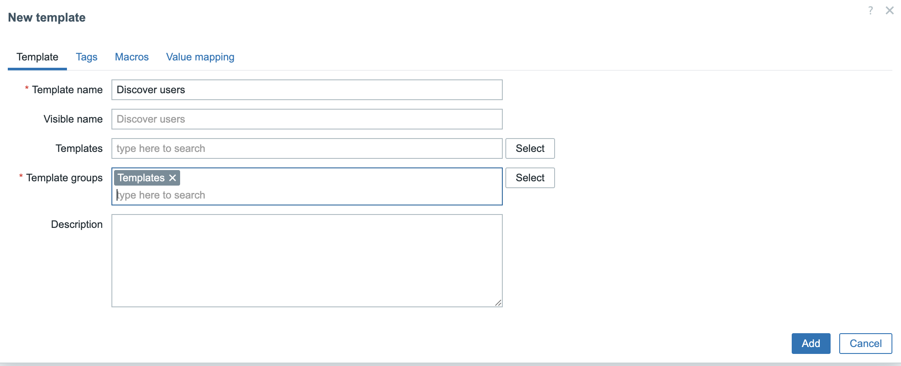
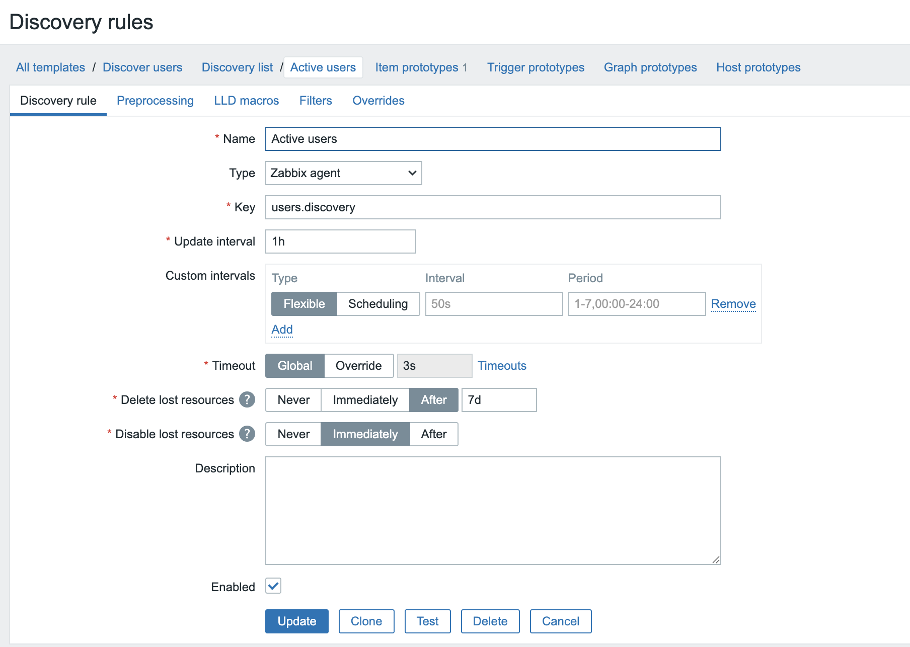
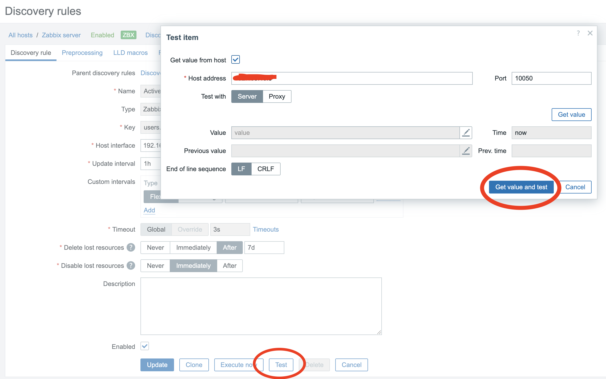
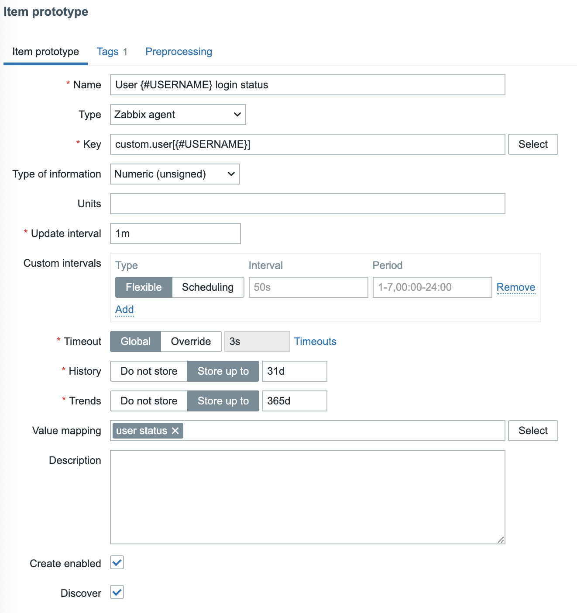
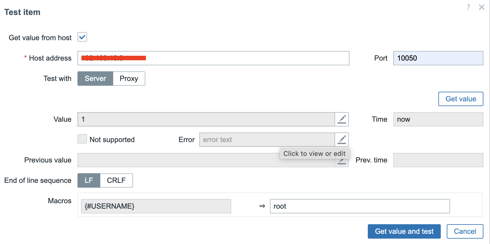
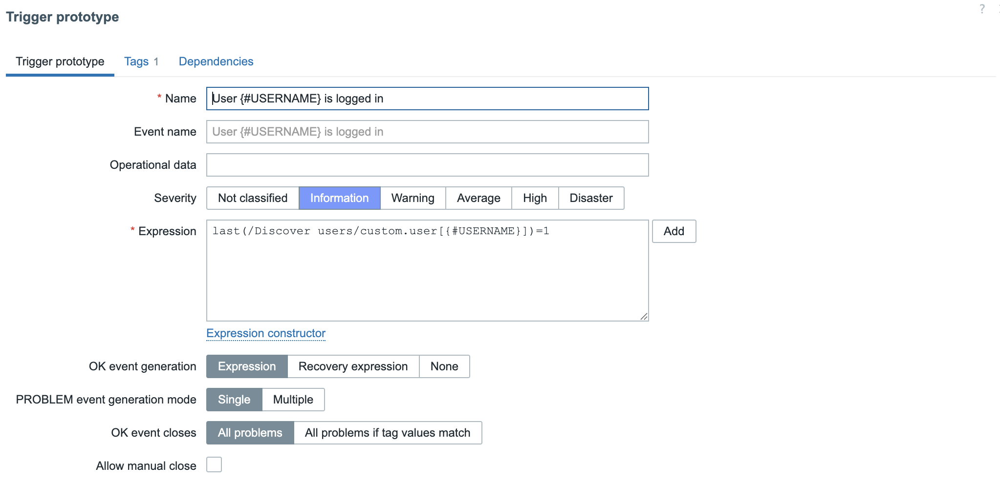
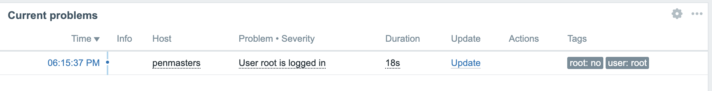
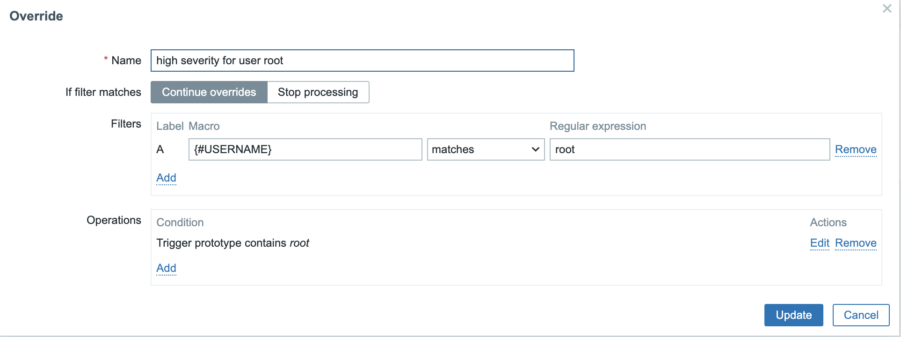
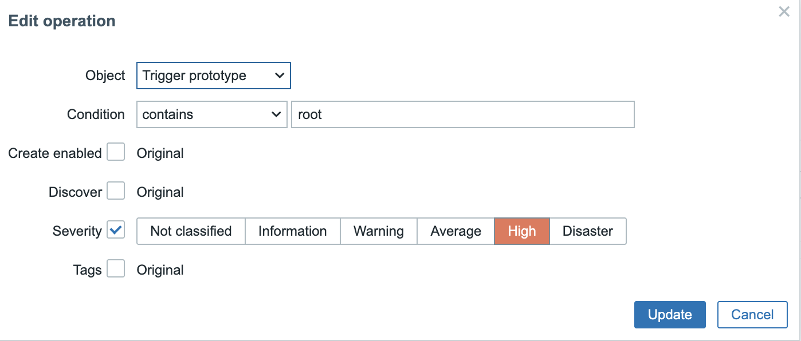

Custom Low Level Discovery
Zabbix's Low-Level Discovery (LLD) plays a crucial role in dynamically detecting and managing monitored entities. While Zabbix provides built-in discovery rules, real-world environments often demand more flexibility and customization.
In this chapter, we will explore custom LLD techniques, allowing you to create powerful, tailored discovery mechanisms that go beyond standard templates. You'll learn how to use scripts and custom rules to automatically detect and monitor services, network interfaces, and other dynamic components within your infrastructure.
Whether you're monitoring cloud environments, network devices, or application-specific metrics, mastering custom LLD will help you reduce manual work, improve accuracy, and scale your monitoring effortlessly. Let’s dive in!
Note
For this chapter we start with a working system with a proper configured agent in passive mode. If you have no clue how to do this go back to chapter 01.
Zabbix Low-Level Discovery (LLD) provides a dynamic mechanism for automatically creating monitoring elements based on discovered entities within your infrastructure.
Core Functionality :
LLD enables Zabbix to detect changes in your environment and create corresponding items, triggers, and graphs without manual intervention. This automation is particularly valuable when monitoring elements with fluctuating quantities or identifiers.
Discovery Targets: The discovery process can identify and monitor various system components including:
- File systems
- CPUs
- CPU cores
- Network interfaces
- SNMP OIDs
- JMX objects
- Windows services
- Systemd services
- Host interfaces
- Anything based on custom scripts
Through LLD, administrators can implement scalable monitoring solutions that automatically adapt to infrastructure changes without requiring constant template modifications.
Implementing Low-Level Discovery in Zabbix
The Challenge of Manual Configuration
We could manually create each item but this would be a very time-consuming task and impossible to manage in large environments. To enable automatic discovery of our items or entities, we need discovery rules.
Discovery Rules
These rules send the necessary data to Zabbix for our discovery process. There is no limit to the various methods we can employ, the only requirement is that the end result must be formatted in JSON. This output information is crucial as it forms the foundation for creating our items.
Prototypes and Automation
Once our discovery rule is in place, we can instruct Zabbix to automatically generate items, triggers, graphs, and even host prototypes. These function as blueprints directing Zabbix how to create those entities.
LLD Macros
To enhance flexibility, Zabbix implements LLD macros. These macros always begin with a # character before their name (e.g., {#FSNAME}). Acting as placeholders for the values of discovered entities, Zabbix replaces these macros with the actual discovered names of the items during the implementation process.
The Zabbix Low-Level Discovery Workflow
The workflow that Zabbix follows during Low-Level Discovery consists of four distinct phases:
Discovery Phase * Zabbix executes the discovery item according to the defined discovery rule * The item returns a JSON list of discovered entities
Processing Phase * Zabbix parses the JSON data and extracts the necessary information
Creation Phase * For each discovered entity, Zabbix creates items, triggers, and graphs based on the prototypes * During this process, LLD macros are replaced with the actual discovered values
Monitoring Phase * Zabbix monitors the created items using standard monitoring procedures
Advantages of LLD Implementation
The benefits of implementing Low-Level Discovery are substantial:
- Automation - Creation of items, triggers, graphs, and hosts becomes fully automated
- Scalability - Enables monitoring of large numbers of hosts or items without manual intervention
- Adaptability - Zabbix can dynamically adjust to environmental changes by creating or removing entities as needed
Learning LLD custom script
We begin our series with LLD based on custom scripts because, while it represents one of the more complex topics, mastering this concept provides a solid foundation. Once you understand this implementation approach, the other LLD topics will be considerably easier to comprehend.
Below is a sample JSON structure that Zabbix can interpret for Low-Level Discovery:
Upon receiving this JSON data, Zabbix processes the discovery information to identify distinct file systems within the monitored environment. The system extracts and maps the following elements:
- File system mount points: /, /boot, and /data
- File system types: ext4 and xfs
Zabbix automatically associates these discovered values with their corresponding LLD macros {#FSNAME} for the mount points and {#FSTYPE} for the file system types. This mapping enables dynamic creation of monitoring objects tailored to each specific file system configuration.
Creating a custom script.
In this example, we will develop a custom script to monitor user login activity on our systems. This script will track the number of users currently logged into each monitored host and report their login status.
The implementation requires placing a custom script in the appropriate location on
systems running Zabbix Agent (either version 1 or 2). Create the following script
in the /usr/bin/ directory on each agent installed system:
paste the following content in the file:
users-discovery.sh
#!/bin/bash
# Find all users with UID ≥ 1000 of UID = 0 from /etc/passwd, except "nobody"
ALL_USERS=$(awk -F: '($3 >= 1000 || $3 == 0) && $1 != "nobody" {print $1}' /etc/passwd)
# Find all active users
ACTIVE_USERS=$(who | awk '{print $1}' | sort | uniq)
# Begin JSON-output
echo -n '{"data":['
FIRST=1
for USER in $ALL_USERS; do
# Check if the user is active
if echo "$ACTIVE_USERS" | grep -q "^$USER$"; then
ACTIVE="yes"
else
ACTIVE="no"
fi
# JSON-format
if [ $FIRST -eq 0 ]; then echo -n ','; fi
echo -n "{\"{#USERNAME}\":\"$USER\", \"{#ACTIVE}\":\"$ACTIVE\"}"
FIRST=0
done
echo ']}'
Once you have created the script don't forget to make it executable.
The script will be executed by the Zabbix agent and will return discovery data about user sessions in the JSON format required for Low-Level Discovery processing.
Once deployed, this script will function as the data collection mechanism for our user monitoring solution, enabling Zabbix to dynamically discover user sessions and track login/logout activities across your infrastructure.
User Provisioning for Testing
Let's establish additional test user accounts on our system to ensure we have sufficient data for validating our monitoring implementation. This will provide a more comprehensive testing environment beyond the default root account and your personal user account. Feel free to add as many users as you like.
create some users
Create a password for every user so that we can login on the consoleCreating a Template
It is always considered best practice to work with a template. The first step is to create a template for the LLD rules.
Navigate to Data collection, select Templates, and click Create template in the upper-right corner.
Fill in the required information, specifying at least a template name and the template group it belongs to.

Once the template is created click on Discovery in the template between Dashboards
and Web. In the upper right corner of the screen you see now a button create discovery rule.
We will nog create our discovery rule that will import the JSON from our script.
Click on the button.
Fill in the needed information like on the screenshot :

Creating a Template for LLD Rules
- Type: Set to Zabbix agent, as the agent is configured to work in passive mode. If the agent is properly configured for active mode, Zabbix agent (active) can be used instead. Passive mode allows polling information from the script.
- Key: This key acts as a reference sent to the agent, instructing it on which script to execute.
- Update Interval: Determines how often Zabbix executes the script. For detecting newly created users, an interval of one hour is a reasonable setting.
Note
If you put the update interval for the discovery rule too frequent like every minute, then this will have a negative impact on the performance. In our case it's a small JSON file but most of the time it will contain much more data.
Once everything is filled in we can save the template.
Login to your console on the host that you would like to monitor and go to the following path.
Creating the User Parameter Configuration
The next step is to create the userparameter-users.conf file in this directory. This file will define the reference key users.discovery from the LLD rule and map it to the corresponding script. By doing this, Zabbix can associate the item key with the correct script execution.
Add the following line in the config file and save it.
Note
When you add a new UserParameter to the agent we need to restart the agent
to pick up the new config or use the config option -R userparameter_reload
on our agent this will apply the new configuration but only works on UserParameters
not on other changes in the agent configuration.
Saving the Template and Preparing the Monitored Host
After entering all the required details, save the template to apply the configuration.
Next, access the console of the host you want to monitor and navigate to the following
directory.
Note
Zabbix agent has a new option since 6.0, userparameter_reload. This allows
us to reload the config for the userparameters and makes a restart of the agent
not necessary.
Testing the Configuration
With the setup complete, it is time to perform some tests.
- Navigate to Data collection and select Hosts.
- Link the newly created template to the appropriate host in the Zabbix frontend.
- Once the template is linked, go to the Discovery section.
- Click on the discovery rule created earlier, Active users.
- At the bottom of the screen, locate the Test button and click on it.
- In the popup window, press Get value and test.
If everything is configured correctly, Zabbix will retrieve the expected value and store it in the database.

If all went well you should have received some data back in JSON like you see here, depending on the number of users you made and what name you gave them.
Creating prototype items.
With our Low-Level Discovery (LLD) rule in place, we are ready to create our LLD item prototype. Follow these steps to configure the item prototype correctly:
-
Navigating to Item Prototype Configuration - Open your template in Zabbix. - Click on the Discovery tab. - Navigate to Item Prototypes. - Click on Create Item Prototype in the upper-right corner.
-
Configuring the Item Prototype Several key fields must be completed for the prototype to function correctly:
-
Name:
- Use the macro
{#USERNAME}to create dynamically generated item names. - Example:
User {#USERNAME} login status.
- Use the macro
-
Type:
- Select
Zabbix agentas the item type to facilitate testing.
- Select
-
Key:
- The item key must be unique.
- Utilize macros to ensure a unique key for each item instance.
-
Type of Information:
- Defines the format of the received data.
- Since our script returns
0or1, set this toNumeric.
-
Update Interval:
- Determines how frequently the item is checked.
- A reasonable interval for checking user online status is
1m(one minute).
With these configurations, your LLD item prototype is ready for deployment.

Configuring the Agent to Listen for LLD Items
Our LLD item will retrieve data from the key custom.user[{#USERNAME}], so the next step is to configure the agent to listen for this key.
- Edit the
userparameter-users.conffile that was created earlier on theZabbix agent. - Add the following line to the configuration file:
- This configuration ensures that the agent listens for requests using the
custom.user[{#USERNAME}]key. - The
{#USERNAME}macro is dynamically replaced with usernames extracted from the discovery rule.
Note
Important: After making changes to the configuration file, restart the Zabbix agent
or reload the configuration to apply the new settings.
With these configurations in place, your LLD item prototype is fully set up and ready for deployment.
Testing our lld items
Before we put things in production we can of course test it. Press the test button
at the bottom. Fill in the needed information:
- Host address : the IP or DNS name where we have our scripts configured on our agent.
- Port : the agent port. This should be 10050 unless you have changed it for some reason.
- Macros : map the macro with one of the user names you have configured on your system.
Press Get value and if all goes well Zabbix will return the value 1 or 0 depending
if the user is online or not.

Apply the template to your host and have a look at the latest data. Things should slowly start to populate.
Adding LLD triggers
Let's go back to our template to our Discovery and select Trigger prototype.
Click on the top right on Create trigger prototype.
Fill in the following fields:
- Name :
User {#USERNAME} is logged inAgain we want our information to be more dynamic so we make use of our macros in the name of our trigger. - Severity : We select the severity level here.
Informationseems high enough. - Expression : We want to get a notification if someone is online you can
make use of the
Addbutton or just copy :last(/Discover users/custom.user[{#USERNAME}])=1

Note
Copying the Expression will only work if you used the same name for the template and item key.
You can now log in with a user that we created before or root and have a look at our dashboard. A notification should popup soon to inform you that a user was logged in.

Creating LLD overrides.
Having our notifications when users log in on our systems is a nice security feature
but i'm more worried when a user logs in with root then when for example Brian
logs in. When root logs in I would like to get the alert High instead of Information.
This is possible in Zabbix when we make use of overrides. Overrides allow us to change the behaviour of our triggers under certain conditions.
Go to the template to the discovery rule Active users. Click on the tab Overrides.
Press on the button Add and fill in the needed information.
- Name : A useful name for our override in our case we call it
high severity for user root. - Filters : Here we filter for certain information that we find in our LLD
macros. In our case we look in the macro
{#USERNAME}for the userroot.

- Operation : Here we define what needs to happen. We want to manipulate the
trigger so select for object
Trigger prototypeand select that we want to modify theSeverityand selectHigh. This will modify the severity of our trigger and change it toHighif the user that is detected is the userroot.

Note
It can take a while before changes are applied to your host. Don't panic this
is normal the discovery rule usually only updates every hour. If you like to
force this just go to your discovery rule on the host, select it and press Execute now.
Once everything is changed you can login on your system with the user root and
one of the other users. As you will see both triggers will fire off but with
different severity levels.